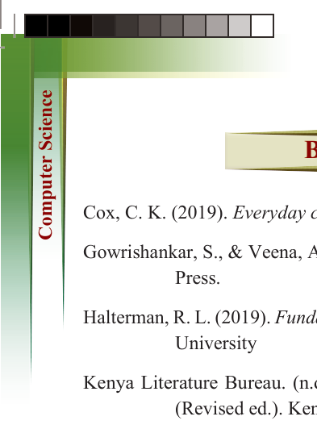

266
for Secondary Schools


BIBLIOGRAPHY

Cox, C. K. (2019). Everyday cybersecurity [eBook].


Gowrishankar, S., & Veena, A. (2019). Introduction to Python programming. CRC


Press.

Halterman, R. L. (2019). Fundamentals of Python programming. Southern Adventist


University

Kenya Literature Bureau. (n.d.). Introduction to computer studies – Form 1 & 2


(Revised ed.). Kenya Literature Bureau.

Kovačič, M. (2022). Crash course on cybersecurity. University of Nova Gorica Press.


Mueller, J. P. (2018). Beginning programming with Python (2nd ed.). John Wiley
& Sons.
Pande, J. (2017). Introduction to cyber security. Uttarakhand Open University.
Rashid, A., Danezis, G., Chivers, H., Lupu, E., & Martin, A. (2019). The cyber security
body of knowledge. The National Cyber Security Centre.
Srivastava, S. K., & Srivastava, D. (n.d.). Data structures through C in depth (2nd rev. & updated ed.). BPB Publications.
Stewart, A. (2016). Python programming for beginners.
Tanzania Institute of Education. (2020). Science and technology: Standard six pupils
book. Tanzania Institute of Education.
Tanzania Institute of Education. (2021). Information and computer studies for
secondary school students: Book form two. Tanzania Institute of Education.
Tutorials Point (I) Pvt. Ltd. (2014). Learn C programming: C programming language.
Tutorials Point.
Wang, H. (2023). Introduction to computer programming with Python. Athabasca
University.

ComputerScin